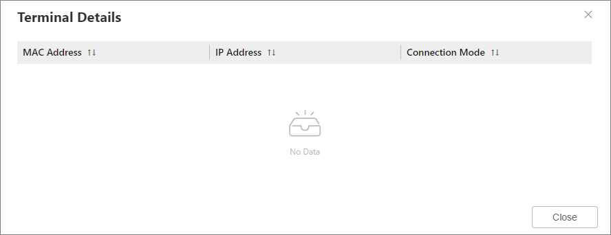

Table 1 lists the parameters.
Table 2 lists the parameters.
Parameter |
Description |
|---|---|
Public Address |
Public address used by the router to connect to the Internet. |
Connection Mode |
Mode in which the router connects to the Internet:
For details about how to set this parameter, see Internet Access Wizard. |
Interface |
Interface used by the router to connect to the Internet. |
Operation |
When Connection Mode is Cellular, you can click Disconnect to disconnect the router from the Internet. |